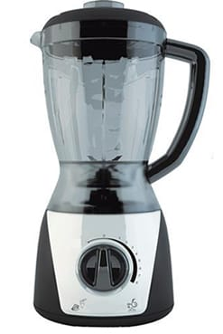

Rendimento
Rendimento é a medida de aproveitamento de uma máquina térmica, que converte em trabalho apenas uma parte da energia térmica retirada da fonte quente. A razão entre o trabalho realizado pela máquina e a quantidade de calor Q1 retirada da fonte quente dá uma ideia desse “aproveitamento” da energia. Essa razão, denominada rendimento da máquina térmica, é representada pela letra grega eta (η).
Fórmula:
É comum o rendimento ser expresso em porcentagem e, sendo τ sempre menor que Q1, sempre teremos 0 ≤ η < 1 ou 0 ≤ η < 100% para qualquer máquina. As grandezas Q1 e Q2 são os valores absolutos das quantidades de calor trocadas com as fontes quente e fria, respectivamente.
Observação: não existe máquina térmica com rendimento de 100%. Se assim fosse, deveríamos ter Q2 = 0 e τ = Q1, o que estaria em contradição com o enunciado de Kelvin -Planck da segunda lei da Termodinâmica.